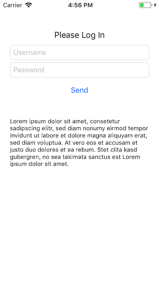
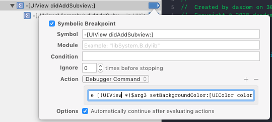
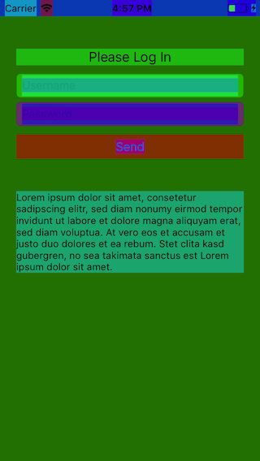
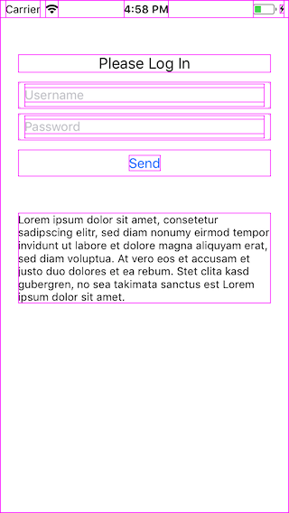

Debugging View Layouts with Breakpoints
I don't like the Interface Builder. When doing the interface in code (and even sometimes when using the Interface Builder) I'd like to see at runtime where exactly the views are positioned. Depending on the contents and the background color of the views this is not always easy.
I the past I usually changed the background color of some views and recompiled the app to see the frames of the views in the simulator. But this approach has several disadvantages.
First I needed to change the code just to be able to visually debug my layout. Second I needed to stop the debugging session and recompile to make the change visible in the simulator.
Then I saw the great WWDC session Advanced Debugging with Xcode and LLDB and thought, LLDB might have some tricks to make this process easier. And indeed it does.
Let's assume we have a login in our app. That might look like this:
In the debug navigator in the lower left corner is a plus button. If you click it, you can add breakpoints. Add a symbolic breakpoint with the trigger -[UIView didAddSubview:] and add a the Debugger Command:
e [(UIView *)$arg3 setBackgroundColor:[UIColor colorWithHue:($arg3 % 100)/100.0 saturation:1.0 brightness:1.0 alpha:0.5]]
In Xcode 9 the UI looks like this:
If you now navigate to the login screen, you see something like this:
If you geht an error like 'no known method […]', add the Debugger Command at the top e @import UIKit (thanks Byaruhanga Franklin):
That's ... interesting.
Maybe that is to much and you just want to add a border to each view. Then change the Debugger Command to:
e [[(UIView *)$arg3 layer] setBorderColor:[[UIColor magentaColor] CGColor]]; [[(UIView *)$arg3 layer] setBorderWidth:1];
If you navigate to the login screen, you should see something like this:
Nice! So with these breakpoints you can always visually check the frames of you views without recompiling the app. You can even go one essential step further. You make these breakpoints available in all your projects by ctr-clicking on each breakpoint and selecting 'Move Breakpoint To > User'.
If you have so feedback, ping be on Twitter.